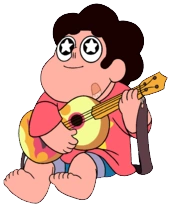

*Steven Quartzo Universo* é o personagem principal da série. Steven é o filho de Rose Quartz (Diamante Rosa), a ex-líder das Crystal Gems, e passa a viver com elas. Ao mesmo tempo que convive com sua vida humana em Beach City, também convive com o mundo Gem, indo atrás de artefatos Gems, derrotando Gems Corrompidas e descobrindo sobre o passado das Gems do Planeta Natal, que tentaram colonizar a Terra.
Steven tem uma personalidade amigável, sendo sempre carinhoso e solidário, apoiando e sempre tentando ajudar ao máximo os outros, um traço apreciado pelos moradores de Beach City. Ele ama aventuras e quer salvar o universo junto com as Crystal Gems, mesmo que ainda não tenha controlado totalmente os poderes de sua pedra, mas ele está sempre disposto a tentar dominá-los. Durante as missões, Steven é bastante agitado e ansioso, tentando sempre encarar o maior problema, mesmo que não consiga vencê-lo realmente. Mas isso pode ser contornado devido a seu jeito único de resolver problemas, eventualmente fazendo-os piores para, então, resolvê-los.
